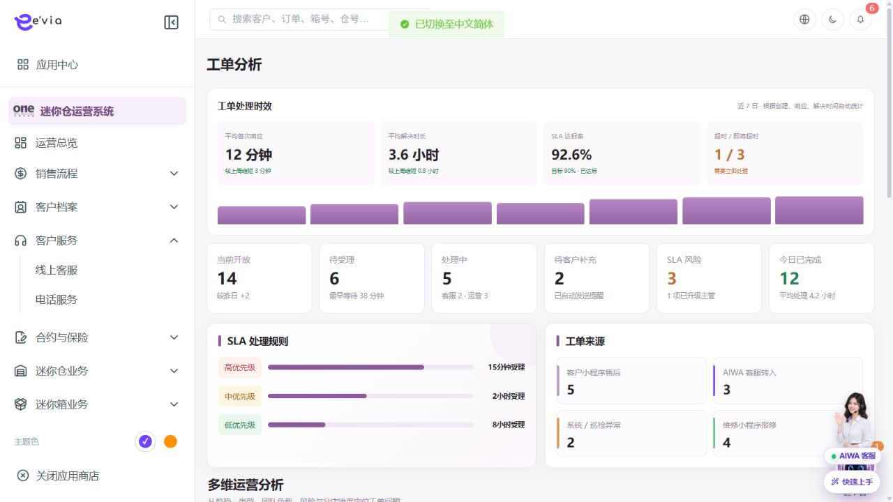

工单分析 PRD
下载 Word 文档工单分析 PRD
运营后台研发详细需求规格 · V2.3 · 2026-09-09
1 文档目标与范围
分析工单数量、首次响应、解决时长、SLA达标率、来源和责任团队。 本文档明确页面字段、操作流程、业务规则、跨端契约、权限和验收条件。
| 属性 | 内容 |
|---|---|
| 文档编号 | OS-OPS-PRD-22 |
| 产品基线 | AiwaBot产品原型 V3.2 与 OneStorage运营后台原型 V1.1 |
| 版本 | V2.3 2026-09-09 |
1.1 原型界面依据
本模块界面直接取自 AiwaBot产品原型-v3.2.html。真实截图及功能点对应说明见“界面与功能对应说明”。
2 界面与页面结构
2.1 界面与功能对应说明
以下真实原型截图用于确定页面区域、入口和交互位置；字段校验、状态变化和服务端处理以本PRD功能规格为准。

| 说明项 | 界面辅助说明 |
|---|---|
| 对应功能点 | OS-OPS-PRD-22-FP01 切换周期；OS-OPS-PRD-22-FP02 指标下钻；OS-OPS-PRD-22-FP03 查看SLA口径；OS-OPS-PRD-22-FP04 导出；OS-OPS-PRD-22-FP05 风险处置 |
| 页面区域 | 顶部为周期和范围筛选，中部为指标卡与图表，内容区提供异常、趋势和下钻入口。 |
| 交互要求 | 筛选变化后组件分别进入加载态；图表显示口径、截止时间和空态。点击卡片、图例或数据点时携带当前筛选下钻。 |
| 状态与权限 | 动作由allowedActions控制；无权限隐藏入口，接口仍执行403校验并记录审计。 |
2.3 筛选条件
| 筛选项 | 规则 |
|---|---|
| 统计周期 | 支持组合查询、重置和返回保留。 |
| 店铺 | 支持组合查询、重置和返回保留。 |
| 工单类别 | 支持组合查询、重置和返回保留。 |
| 来源 | 支持组合查询、重置和返回保留。 |
| 优先级 | 支持组合查询、重置和返回保留。 |
| 负责人 | 支持组合查询、重置和返回保留。 |
| 团队 | 支持组合查询、重置和返回保留。 |
3 列表字段规格
>| 字段ID | 字段 | 来源 | 展示与交互规则 |
|---|---|---|---|
| OS-OPS-PRD-22-L01 | 指标名称 | 业务主域 | 详情与导出保持一致；空值显示—，不使用模拟值补齐。 |
| OS-OPS-PRD-22-L02 | 当前值 | 业务主域 | 详情与导出保持一致；空值显示—，不使用模拟值补齐。 |
| OS-OPS-PRD-22-L03 | 目标值 | 业务主域 | 详情与导出保持一致；空值显示—，不使用模拟值补齐。 |
| OS-OPS-PRD-22-L04 | 对比值 | 业务主域 | 详情与导出保持一致；空值显示—，不使用模拟值补齐。 |
| OS-OPS-PRD-22-L05 | 变化 | 业务主域 | 详情与导出保持一致；空值显示—，不使用模拟值补齐。 |
| OS-OPS-PRD-22-L06 | 统计周期 | 服务端时间 | 按Asia/Hong_Kong显示；空值显示—，排序使用原始时间。 |
| OS-OPS-PRD-22-L07 | 口径 | 业务主域 | 详情与导出保持一致；空值显示—，不使用模拟值补齐。 |
| OS-OPS-PRD-22-L08 | 下钻入口 | 业务主域 | 详情与导出保持一致；空值显示—，不使用模拟值补齐。 |
4 新增与编辑表单
| 字段ID | 字段 | 控件 | 必填 | 校验与保存规则 |
|---|---|---|---|---|
| OS-OPS-PRD-22-F01 | 报表名称 | 文本框 | 条件必填 | 去除首尾空格；保存原始值与标准化值。 |
| OS-OPS-PRD-22-F02 | 统计周期 | 文本框 | 条件必填 | 去除首尾空格；保存原始值与标准化值。 |
| OS-OPS-PRD-22-F03 | 维度 | 文本框 | 条件必填 | 去除首尾空格；保存原始值与标准化值。 |
| OS-OPS-PRD-22-F04 | 指标 | 文本框 | 条件必填 | 去除首尾空格；保存原始值与标准化值。 |
| OS-OPS-PRD-22-F05 | 筛选条件 | 文本框 | 条件必填 | 去除首尾空格；保存原始值与标准化值。 |
| OS-OPS-PRD-22-F06 | 导出格式 | 文本框 | 条件必填 | 去除首尾空格；保存原始值与标准化值。 |
| OS-OPS-PRD-22-F07 | 接收邮箱 | 邮箱输入 | 选填 | 格式校验并转小写保存检索值。 |
5 功能点详细设计
| 功能编号 | 功能点 | 目标 |
|---|---|---|
| OS-OPS-PRD-22-FP01 | 切换周期 | 重算所有卡片和分布图。 |
| OS-OPS-PRD-22-FP02 | 指标下钻 | 跳转工单列表并带入同一筛选。 |
| OS-OPS-PRD-22-FP03 | 查看SLA口径 | 展示起止节点、暂停条件和版本。 |
| OS-OPS-PRD-22-FP04 | 导出 | 异步生成含口径和截止时间的报表。 |
| OS-OPS-PRD-22-FP05 | 风险处置 | 从风险指标创建跟进或升级任务。 |
5.1 切换周期
功能编号：OS-OPS-PRD-22-FP01
功能目的：重算所有卡片和分布图。
使用角色与入口：当前对象负责人、被分派执行人或获授权管理员；从列表行操作、详情页主操作区或待办入口进入。入口显示前校验菜单、动作和数据范围。
前置条件：用户登录有效；目标对象存在且属于用户dataScope；当前状态包含该动作；页面持有最新version和allowedActions。涉及金额、库存、附件或第三方结果时必须回源确认。
界面操作：在详情页执行切换周期，填写或核对报表名称、统计周期、维度、指标、筛选条件、导出格式、接收邮箱、指标名称、当前值、目标值；界面随步骤显示当前节点、下一步和可撤回条件。
系统处理：服务端调用POST /ops/v1/ticket-analytics/{id}/actions/{action}，校验权限、当前状态、expectedVersion和业务不变量，在事务中写入状态及时间线。重算所有卡片和分布图。
业务规则：首次响应从建单到首次有效受理；等待客户补充期间是否暂停SLA由类别配置。服务端必须重复校验。
成功结果：页面提示“切换周期成功”，刷新对象状态、version、allowedActions、关联对象和时间线；如产生异步任务，同时显示任务编号和进度入口。
异常与恢复：400保留输入；403拒绝并审计；409要求刷新；超时按clientRequestId查询；部分成功显示明细和补偿入口。
跨端影响：工单小程序节点时间作为SLA主数据；接收端打开后重新鉴权并回源。
验收条件：在允许状态下完成切换周期时仅产生一次预期数据变化和一次审计记录；越权、错误状态、重复提交及版本冲突均不得产生重复对象或越级状态。
5.2 指标下钻
功能编号：OS-OPS-PRD-22-FP02
功能目的：跳转工单列表并带入同一筛选。
使用角色与入口：拥有对应dataScope的查询用户；从指标卡、图表、列表行标题或详情入口进入。入口显示前校验菜单、动作和数据范围。
前置条件：用户登录有效，拥有菜单和对象查看权限，查询条件属于dataScope；打开详情时对象存在。敏感字段、金额和状态必须回源。
界面操作：从卡片、列表或关联编号进入，加载报表名称、统计周期、维度、指标、筛选条件、导出格式、接收邮箱、指标名称、当前值、目标值及时间线；切换页签或筛选不改变主对象，返回时保留来源页条件。
系统处理：服务端校验身份、dataScope和字段脱敏后查询 /ops/v1/ticket-analytics；返回version、关联对象、时间线和allowedActions。跳转工单列表并带入同一筛选。
业务规则：下钻总数与指标口径一致。服务端必须重复校验。
成功结果：界面完成指标下钻并显示最新数据、截止时间、关联对象和允许操作；查询本身不改变业务状态。涉及敏感原文查看时单独记录访问审计。
异常与恢复：400保留输入；403拒绝并审计；409要求刷新；超时按clientRequestId查询；部分成功显示明细和补偿入口。
跨端影响：客户回复解除等待状态；接收端打开后重新鉴权并回源。
验收条件：指标下钻只返回dataScope内且按权限脱敏的数据；刷新前后无业务写入，筛选、详情和导出对同一对象的字段值一致。
5.3 查看SLA口径
功能编号：OS-OPS-PRD-22-FP03
功能目的：展示起止节点、暂停条件和版本。
使用角色与入口：拥有对应dataScope的查询用户；从指标卡、图表、列表行标题或详情入口进入。入口显示前校验菜单、动作和数据范围。
前置条件：用户登录有效，拥有菜单和对象查看权限，查询条件属于dataScope；打开详情时对象存在。敏感字段、金额和状态必须回源。
界面操作：从卡片、列表或关联编号进入，加载报表名称、统计周期、维度、指标、筛选条件、导出格式、接收邮箱、指标名称、当前值、目标值及时间线；切换页签或筛选不改变主对象，返回时保留来源页条件。
系统处理：服务端校验身份、dataScope和字段脱敏后查询 /ops/v1/ticket-analytics；返回version、关联对象、时间线和allowedActions。展示起止节点、暂停条件和版本。
业务规则：等待客户补充期间是否暂停SLA由类别配置；下钻总数与指标口径一致。服务端必须重复校验。
成功结果：界面完成查看SLA口径并显示最新数据、截止时间、关联对象和允许操作；查询本身不改变业务状态。涉及敏感原文查看时单独记录访问审计。
异常与恢复：400保留输入；403拒绝并审计；409要求刷新；超时按clientRequestId查询；部分成功显示明细和补偿入口。
跨端影响：后台升级策略向负责人和主管发送通知；接收端打开后重新鉴权并回源。
验收条件：查看SLA口径只返回dataScope内且按权限脱敏的数据；刷新前后无业务写入，筛选、详情和导出对同一对象的字段值一致。
5.4 导出
功能编号：OS-OPS-PRD-22-FP04
功能目的：异步生成含口径和截止时间的报表。
使用角色与入口：具备导出或报告权限的用户；从列表工具栏或报告生成入口进入。入口显示前校验菜单、动作和数据范围。
前置条件：用户具备导出或报告权限，当前查询已完成且筛选合法；导出列不得超出字段权限，任务配额未超限。
界面操作：沿用当前筛选与列权限，选择导出范围或报告格式；任务进入进度中心，完成后提供限时下载。
系统处理：服务端冻结查询条件和dataScope并创建异步任务；逐条校验权限、版本和状态，返回成功、失败及原因明细。异步生成含口径和截止时间的报表。
业务规则：导出继承当前筛选、数据范围和字段权限；文件使用短期签名地址；生成、下载和失败均记录审计。。服务端必须重复校验。
成功结果：界面创建导出任务并显示任务编号、生成进度、有效期和下载入口；下载内容与任务冻结的筛选及列权限一致。
异常与恢复：400保留输入；403拒绝并审计；409要求刷新；超时按clientRequestId查询；部分成功显示明细和补偿入口。
跨端影响：工单小程序节点时间作为SLA主数据；接收端打开后重新鉴权并回源。
验收条件：相同筛选和字段权限生成的导出数据量与列表一致；重复提交复用幂等结果，越权字段不进入文件。
5.5 风险处置
功能编号：OS-OPS-PRD-22-FP05
功能目的：从风险指标创建跟进或升级任务。
使用角色与入口：当前对象负责人、被分派执行人或获授权管理员；从列表行操作、详情页主操作区或待办入口进入。入口显示前校验菜单、动作和数据范围。
前置条件：用户登录有效；目标对象存在且属于用户dataScope；当前状态包含该动作；页面持有最新version和allowedActions。涉及金额、库存、附件或第三方结果时必须回源确认。
界面操作：在详情页执行风险处置，填写或核对报表名称、统计周期、维度、指标、筛选条件、导出格式、接收邮箱、指标名称、当前值、目标值；界面随步骤显示当前节点、下一步和可撤回条件。
系统处理：服务端调用POST /ops/v1/ticket-analytics/{id}/actions/{action}，校验权限、当前状态、expectedVersion和业务不变量，在事务中写入状态及时间线。从风险指标创建跟进或升级任务。
业务规则：首次响应从建单到首次有效受理；等待客户补充期间是否暂停SLA由类别配置。服务端必须重复校验。
成功结果：页面提示“风险处置成功”，刷新对象状态、version、allowedActions、关联对象和时间线；如产生异步任务，同时显示任务编号和进度入口。
异常与恢复：400保留输入；403拒绝并审计；409要求刷新；超时按clientRequestId查询；部分成功显示明细和补偿入口。
跨端影响：客户回复解除等待状态；接收端打开后重新鉴权并回源。
验收条件：在允许状态下完成风险处置时仅产生一次预期数据变化和一次审计记录；越权、错误状态、重复提交及版本冲突均不得产生重复对象或越级状态。
6 状态机与业务规则
| 对象 | 状态流转 |
|---|---|
| 工单分析 | 数据任务：计算中→成功/部分成功/失败；风险：正常→即将超时→已超时 |
| 异步任务 | 待执行→执行中→成功/失败→重试/人工处理 |
| 规则ID | 业务规则 |
|---|---|
| OS-OPS-PRD-22-R01 | 首次响应从建单到首次有效受理 |
| OS-OPS-PRD-22-R02 | 等待客户补充期间是否暂停SLA由类别配置 |
| OS-OPS-PRD-22-R03 | 重复开启工单分别计算处理区间 |
| OS-OPS-PRD-22-R04 | 统计结果排除测试和已撤销工单 |
| OS-OPS-PRD-22-R05 | 下钻总数与指标口径一致 |
| OS-OPS-PRD-22-R06 | 所有写请求携带clientRequestId和expectedVersion，重复请求返回首次结果 |
| OS-OPS-PRD-22-R07 | 服务端返回allowedActions，前端仅据此展示按钮，后端仍逐动作鉴权 |
| OS-OPS-PRD-22-R08 | 列表、详情、关联选择器、统计和导出使用同一数据范围 |
| OS-OPS-PRD-22-R09 | 创建、编辑、状态流转、导出、下载和审批均记录操作审计 |
| OS-OPS-PRD-22-R10 | 第三方调用失败不得伪装主业务成功，进入可重试或人工处理状态 |
7 业务处理链路
配置和治理操作使用审批、发布和版本管理
下游状态变化通过领域事件处理
批量和异步任务提供状态与失败明细
8 跨端交互规则
| 规则ID | 交互规则 |
|---|---|
| OS-OPS-PRD-22-X01 | 工单小程序节点时间作为SLA主数据 |
| OS-OPS-PRD-22-X02 | 客户回复解除等待状态 |
| OS-OPS-PRD-22-X03 | 后台升级策略向负责人和主管发送通知 |
客户小程序仅访问本人数据，工单小程序仅访问本人或团队任务
深链打开后重新校验身份、权限和最新状态
金额、库存、状态和allowedActions必须回源
离线重试沿用同一clientRequestId
9 接口与事件契约
| 契约 | 路径或事件 | 要求 |
|---|---|---|
| 列表 | GET /ops/v1/ticket-analytics | 分页、排序、筛选、数据范围和脱敏 |
| 详情 | GET /ops/v1/ticket-analytics/{id} | version、关联对象、时间线和allowedActions |
| 新增 | POST /ops/v1/ticket-analytics | clientRequestId幂等 |
| 编辑 | PATCH /ops/v1/ticket-analytics/{id} | expectedVersion并发控制 |
| 动作 | POST /ops/v1/ticket-analytics/{id}/actions/{action} | 动作级权限和状态前置 |
| 事件 | 工单分析.Changed.v1 | eventId、aggregateId、version和occurredAt |
10 异常与边界处理
| 场景 | 处理 |
|---|---|
| 400字段错误 | 字段级提示并保留输入 |
| 403无权限 | 拒绝并记录审计 |
| 404不存在 | 不泄露额外对象信息 |
| 409版本冲突 | 刷新后重新操作 |
| 重复请求 | 返回首次幂等结果 |
| 第三方失败 | 进入重试或人工处理 |
11 验收标准
| 验收ID | 验收条件 |
|---|---|
| OS-OPS-PRD-22-AC01 | 列表字段、筛选、分页、排序和导出一致 |
| OS-OPS-PRD-22-AC02 | 表单字段、必填和跨字段校验完整 |
| OS-OPS-PRD-22-AC03 | 所有动作同时校验权限、数据范围和状态 |
| OS-OPS-PRD-22-AC04 | 重复请求无重复记录或副作用 |
| OS-OPS-PRD-22-AC05 | 跨端编号、状态、金额和时间一致 |
| OS-OPS-PRD-22-AC06 | 异常和空数据有明确反馈 |
| OS-OPS-PRD-22-AC07 | 敏感字段按权限脱敏并审计 |
| OS-OPS-PRD-22-AC08 | P0规则具有自动化测试 |